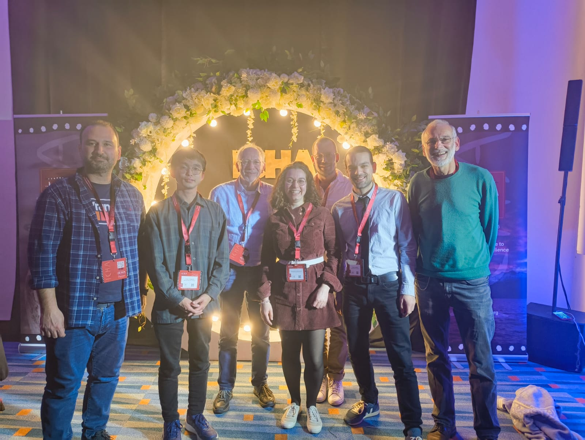

ICHA 2025 — Harmful Algae Science at the Edge of the World
November 12, 2025
The 22nd International Conference on Harmful Algae (ICHA) took place in Punta Arenas, Chile, arguably one of the more dramatic settings for a scientific conference, at the southern tip of South America with the Strait of Magellan not far from view. It was a timely location given that Southern Chile is itself one of the world's most active HAB regions, with paralytic shellfish poisoning toxins documented across the vast fjord systems of the Magallanes region — a landscape I had the chance to engage with indirectly through a 2022 publication on toxin distribution in the Última Esperanza Province during the PROFAN expedition.
For me personally, ICHA 2025 was my first attendance at this conference in a professional capacity for the IAEA, rather than as a PhD student. That shift in perspective was noticeable from the first day.
The IAEA presence
The IAEA Marine Environment Laboratories used the conference as a platform to present ongoing and planned activities under the INT7022 Technical Cooperation Project. I presented a poster on the IAEA's capacity building and collaborative projects on HABs and biotoxins, covering both the TC project and our Coordinated Research Projects. The conference brought together national counterparts, potential collaborators, and the broader scientific community in one place, which makes it an indispensable venue for this kind of institutional outreach.
We also held a dedicated side meeting for INT7022 — Strengthening Ocean Health for Sustainable Development: A Global Approach Using Nuclear and Isotopic Techniques — bringing together project counterparts attending ICHA to discuss progress, coordinate upcoming activities, and align priorities for the remainder of the project cycle. Holding this meeting at the conference margins was efficient and productive, as many counterparts were already present and the scientific programme provided immediate shared context.

Beyond the poster, the side meetings were at least as valuable as the formal programme. Conversations with monitoring scientists from across Latin America, Southeast Asia, and Africa reinforced many of the observations from the Cuba workshop in March: the methods are available, but access to reference materials, trained personnel, and functioning analytical infrastructure remains the limiting factor for effective monitoring in many coastal nations.
Scientific highlights
The programme was dense. A few themes stood out to me from the sessions I attended. Climate-driven range expansions of HAB species continue to receive significant attention, including, I am glad to say, ongoing discussion of Alexandrium pseudogonyaulax, the species at the centre of my PhD work. Benthic HABs and ciguatera received stronger representation than I recall from previous conference cycles, reflecting the growing recognition that these toxins are an undermonitored but significant global risk. And the analytical session made clear that LC-MS/MS is consolidating its position as the backbone of regulatory monitoring, even in settings where access remains uneven.
A broader reflection
There is something about attending a major disciplinary conference in a new professional role that clarifies what you actually care about. As a PhD student, the primary currency is scientific novelty — new results, new methods, new species. As someone now working on the interface between science and operational monitoring, I found myself drawn most strongly to the sessions that addressed the distance between what we know and what is actually being done in the field. That gap is large, and closing it is not a scientific problem.
I left Punta Arenas with a renewed appreciation for how much useful work remains to be done, and for the community of people committed to doing it. It was also great to see former colleagues and supervisors again, several of whom have become friends over the years.
